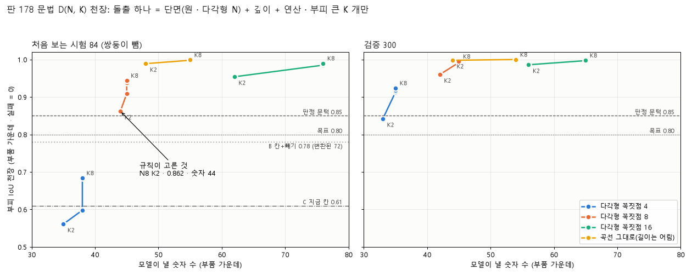

실험 m2_tr0178_h000_문법천장
178 문법 천장 — 어떤 문법이면 정답을 0.85 넘게 옮기나 (11-10 · 원화3d/실험_20261013/캐드부품/문법178.py · 손으로 정리)
분석
한 줄로
물음: 지금 칸 문법은 천장 0.61 이라 0.80 을 막는다. 돌출 몇 개와 단면 다각형으로 이뤄진 문법 중, 천장 0.85 를 넘는 가장 짧은 것은 무엇인가?
답: 꼭짓점 8 개 다각형 · 돌출 2 개(N8 K2)다. 처음 보는 시험 84 에서 천장 0.862, 모델이 낼 숫자 44 개. 지금 칸(0.61 · 숫자 246 개)보다 짧고 높다.
왜 이 판을 했나
m2_tr0177_h000_원인찾기에서 학습 · 인코더 · 정답 · 해상도가 주범이 아니었고, 지금 칸 문법의 위 끝(0.61)이 목표 0.80 보다 낮았다. 사용자: 「한계라는 거지 · 저장해 놓고 다음 거」. 학습 전에 문법 후보마다 천장부터 잰다.
바꾼 것 하나
학습 없음. 정답 설계(Fusion 360 reconstruction)를 문법 D(N, K)로 옮겨 다시 짓고 부피 IoU 를 잼.
- 돌출 하나 = 단면 + 깊이 + 연산(더하기 · 빼기 · 교차). 단면 고리 = 원(원 하나면 그대로) 또는 꼭짓점 N 개 다각형(넓이 작은 꼭짓점부터 뺌).
- 돌출은 부피 큰 K 개만 · 시간 순서대로 합침. N ∈ {4, 8, 16, 곡선 그대로} × K ∈ {2, 4, 6, 8}.
- 판정(미리 적음): 천장 ≥ 0.85 중 출력이 가장 짧은 것 · 없으면 호 추가 · K 늘려 다시.
결과

| 문법 | 시험 84 천장 | 검증 300 천장 | 숫자 수 | 0.85 넘었나 |
|---|---|---|---|---|
| 지금 칸 C | 0.61 | — | 246 | 아니 |
| 다각형 4 · K8 | 0.684 | 0.924 | 38 | 아니 |
| 다각형 8 · K2 | 0.862 | 0.960 | 44 | 넘음 · 가장 짧음 |
| 다각형 8 · K4 | 0.909 | 0.992 | 45 | 넘음 |
| 다각형 16 · K4 | 0.985 | 0.997 | 76 | 넘음 |
| 곡선 그대로 · K4 | 0.998 | 1.000 | 약 55 | 넘음 |
왜 이렇게 나왔나
확인한 것
- 다각형 8 은 원 · 막대 · 고리를 거의 그대로 살린다. 깨지는 건 둥근 C 자 단면(0.47) 같은 곡선 많은 단면이다. 곡선 그대로면 0.99.
- K 를 2 → 4 로 늘려도 숫자는 가운데 1 개만 는다. 대부분 부품이 돌출 2 개 이하라서다.
짐작 (아직 확인 안 함)
- 천장이 높아도 모델이 다각형 꼭짓점을 맞힐 수 있는지는 별개다 → tr179 에서 학습으로 잰다.
한계
- 실패는 0 으로 셈: 시험은 단면을 못 지은 2~4 개, 검증은 5 분 넘긴 무거운 부품 12 개.
- 「곡선 그대로」 숫자 수는 곡선마다 4 개로 어림했다.
- 자 결함 찾음: 시험 100 중 5 개(쌍둥이 뺀 84 중 4 개)는 가는 부품이라 64³ 정답 칸이 비어, 어떤 답도 0 이다. 172~177 도 같은 조건이라 판끼리 비교는 그대로지만 절대 점수는 그만큼 낮다. 11-09 자 감사에서 놓쳤다(내 실수).
- 영향 잼(11-10 · 미리 적은 판정 셋 중 ① 걸림): 빈 정답을 빼면 84 에서 천장 C 0.614 → 0.665(+0.051) · 173 이어 0.432 → 0.435 · N8 K2 0.862 → 0.880. 빈 정답을 1 로 쳐도 천장 C 0.717 < 0.80(② 아님) · 문법 순서 그대로(③ 아님). 옛 자도 같은 5 개가 비어 있었다 · 검증 300 은 14 개. 빈 정답은 모든 판에서 0 이라 짝 비교 승패는 안 바뀐다. 크기는 바뀌고 결론(지금 칸으로는 0.80 못 감 · N8 K2 선택)은 그대로.
- 측정이 09:47 에 끝났는데 일꾼 풀이 안 나가 1 시간 반 뒤에 확인했다. os._exit 로 고침.
배운 것과 다음
문법을 바꾸면 0.80 을 막던 벽이 풀린다 — 이제 모델이 그 문법을 배울 수 있는지가 물음이다.
- tr179: 같은 경량 모델 · 출력만 돌출 칸(자리 · 깊이 · 연산 · 원 또는 꼭짓점 8 개)으로 바꿔 학습.
- 빈 정답 부품은 빼고 몇 개 뺐는지 따로 적는다.